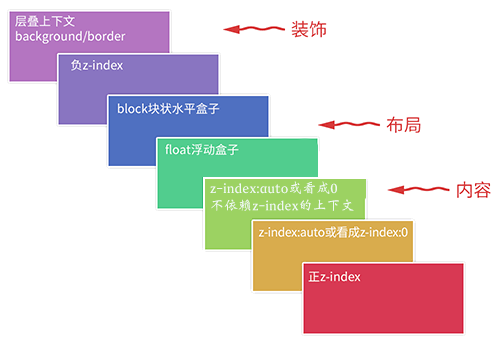

z-index技术周边
2017-07-22 星期六 南京 晴
标题写的是z-index，其实这里更多说的是一个去决定元素在z轴上显示层次的理论知识，包括层叠上下文、层叠水平和层叠顺序。当然也会在理论结束之后，对必要的实践加以说明，毕竟有用才是目的。
层叠上下文和层叠水平
层叠上下文是一个概念上的东西，学过编译原理的人应该对这里的上下文很清楚，而层叠不过就是一个词罢了，解释一下就是，根据层叠规则决定位置的一个环境。还需要注意的一点是，具有层叠上下文的元素比普通元素要更靠近眼睛。
层叠水平也是一个概念上的东西，用大白话说就是：在一个层叠上下文的环境下，里面的元素在z轴上的排列顺序的规则，而层叠顺序就是这里说的具体规则，是实践的东西。
层叠顺序
通过上面的介绍，相信你已经对层叠顺序是用来干什么的没有疑问了，那具体这个规则是什么？请看下面这个图：
需要记住的是，内部的层叠上下文及其子元素均受制于外部的层叠上下文。
层叠上下文产生的条件
谁有层叠上下文，主要是下面三个：
-
根层叠上下文指的是页面根元素，也就是<html>元素。
-
定位元素与传统层叠上下文使用了position:absolute、position:fixed或position:relative的定位元素，且z-index的值是数字会产生叠上下文。
-
CSS3与新时代的层叠上下文具体见下一段落。
CSS3下层叠上下文的产生
css3添加了非常多新的东西，其中有很多涉及了这里说的话题，下面就分别一一介绍几个比较常用的属性：
一个被设置了display:flex的元素包含的元素对其设置z-index为数值时其会产生层叠上下文

设置了opacity不为1的元素会产生层叠上下文
设置了transform不为none的元素会产生层叠上下文
设置了mix-blend-mode不为normal的元素会产生层叠上下文
设置了filter不为none的元素会产生层叠上下文
设置了isolation:isolate的元素会产生层叠上下文
这个声明是mix-blend-mode应运而生的,默认情况下，mix-blend-mode会混合z轴所有层叠在下面的元素，要是我们不希望某个层叠的元素参与混合怎么办呢？就是使用isolation:isolate，这里不举例子了。
设置了will-change的元素会产生层叠上下文
设置了-webkit-overflow-scrolling的元素会产生层叠上下文
这个属性是移动端的，这里只是列出来，不加以说明了。